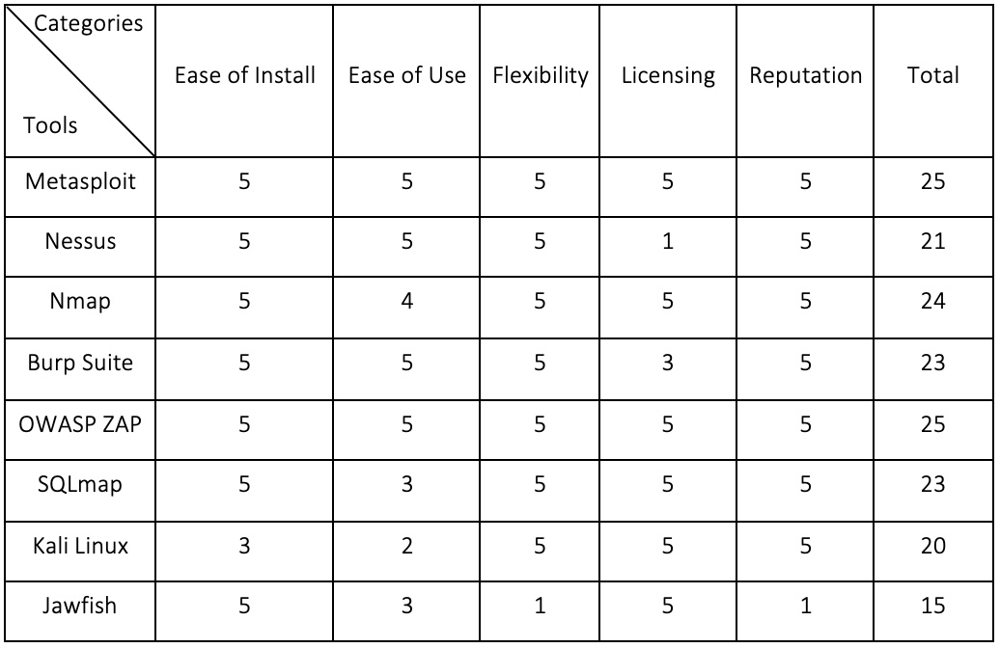

Network and Information Security Management

This module provides foundation and hands on experience in security concepts and terminology and network technology.
On completion of this module, students are expected to:
Unit 1:
In this unit, the four tenets (Confidentiality, Integrity, Availability and Non-repudiation) are introduced. Two major concepts in cybersecurity are also discussed; threats and vulnerabilities and their relation, classification and assessment.
Collaborative Learning Discussion 1: Threats and Vulnerabilities and Solutions for Mitigation of a Medical Mannequin
The initial post is based on the paper "Compromising a Medical Mannequin Glisson" by W., Andel, T., McDonald, T., Jacobs, M., Campbell, M. & Mayr, J. (2015).
Initial Post: The paper (Glisson et. al., 2015) addresses the dependence of technology in medical training devices and the cyber security vulnerabilities and threats due to this dependence. Integrating technology into the medical field automatically awakens malicious activity and attacks. This paper focuses on a production-deployed medical training mannequin and its viability and shows that they can be successfully attacked. Once a medical device is breached, thousands of patients will be impacted, as medical staff will incorrectly analyse life threatening data. The paper discusses two vulnerabilities the medical mannequin could have: the 802.11 wireless transmissions between the mannequin and the controlling laptops and the TCP network protocol. With the existence of vulnerabilities threats will constantly arise and, in this case, the threats to the vulnerabilities mentioned above are brute force attacks and Denial of Service (DoS), respectively. A strong security system is required in order to mitigate DoS attacks. Investing in an antivirus software, which is constantly up to date, will achieve detection and prevention of potential viruses and malware that could harm the network. Firewalls constructed to protect against these attacks may also be useful, as they can assist in monitoring and analysing network traffic (Velimirovic, 2021; Overby, 2021). To reduce the risk of brute force attacks on the Wi-Fi Protected Setup WPS vulnerability (WPS) PIN, CISA (2013) suggested disabling the WPS if and where possible, as some vendors do not allow disabling it (Swan, N.D.). Swan (N.D.) also suggests updating the firmware when updates are available. Another solution to mitigating the risk of a brute force attack and making the attack “impractical” is the implementation of “sufficiently long lock-down periods” (Viehböck, 2011). References: Cybersecurity Infrastructure Security Agency (CISA). (2012) Wi-Fi Protected Setup (WPS) Vulnerable to Brute-Force Attack. Available from: https://www.cisa.gov/uscert/ncas/alerts/TA12-006A [Accesed 10 March 2022]. Glisson, W. B., McDonald, T., Campbell, M., Andel, T., Jacobs, M. & Mayr, J., (2015) ‘Compromising a Medical Mannequin’, AMCIS 2015 Proceedings. Puerto Rico, 13-14 August. New York: AIS eLibrary. 1-11. Overby, S. (2021) DOS Attacks Explained: What They Are and How To Prevent Them. Available from: https://www.mimecast.com/blog/what-is-dos-attack-and-how-to-prevent-it/ [Accessed 10 March 2022]. Swan, D. (N.D.) WiFi Protected Setup (WPS) Brute Force Attack. Available from: https://www.academia.edu/3292261/WiFi_Protected_Setup_WPS_Brute_Force_Attack [Accessed 10 March 2022]. Velimirovic, A. (2021) How to Prevent DDoS Attacks: 7 Tried-and-Tested Methods. Available from: https://phoenixnap.com/blog/prevent-ddos-attacks [Accessed 10 March 2022]. Viehböck, S. (2011) Brute forcing Wi-Fi Protected Setup. Available from: https://sviehb.files.wordpress.com/2011/12/viehboeck_wps.pdf [Accessed 10 March 2022].
Team Contract
In Unit 1 we were allocated to groups. Each group had to complete a Team Contract where team members discussed the goals, expectations, suggestions, procedures and policies of the upcoming group project.
Unit 2:
Unit 2 is based on the Unit 1 paper on the medical mannequin. The learning outcomes of this unit are:
Seminar 1: STRIDE & DREAD Tools
Peer Responses
Unit 3:
This unit consisted of a brief history of networking presentation, ISO/OSI 7-layer model and its relation to TCP/IP networks, description of basic internet tools such as ping tests, traceroute and dig and the definition of IPv4, IPv6 and its differences.
Collaborative Learning Discussion 1: Threats and Vulnerabilities and Solutions for Mitigation of a Medical Mannequin: Summary Post
Glisson et. al.’s (2015) paper emphasises on the healthcare industry being dependent on technology. This dependence awakens vulnerabilities followed by potential threats in the cyber field. The paper focuses on a medical training mannequin being tested for how viable it is. Vulnerabilities were detected and threats such as brute force and denial of service (DoS) successfully attacked the mannequin. These attacks automatically have as a consequence the danger of thousands of lives, as medical personnel will end up with incorrect life-threatening data analysis. Mitigation suggestions for both, brute force and DoS attacks, were discussed. Disabling the Wi-Fi Protection Setup (WPS) wherever it is possible, was suggested by CISA (2013) as a mitigating solution for brute force attacks, as well as keeping the firmware consistently updated (Swan, N.D.). Vieböck’s (2011) suggestion was to implement “sufficiently long lock-down periods”, while passwords should be strong i.e., long, and complex (Necat, 2022). Necat (2022) also suggested that by limiting failed login attempts within an assigned period, the time required to brute force a password will increase. Although there were mitigating suggestion for brute force attacks, the discussion’s responses focused more on DoS attacks mitigation. Necat (2022) considers firewalls to be the “first line of defence” for DoS attacks. Ahmad, A. (2022) and Ahmad, H. (2022) both suggested investing in an up-to-date antivirus. Ahmad, H. (2022) also mentioned the importance of improvement in the network’s security features, due to Wi-Fi networks being prone to attacks, resulting in the avoidance of unauthorised access and intrusion. Two-Factor Authentication can provide a supplementary layer of security by requi- ring an additional factor for authorisation such as hardware tokens, OTPs, etcetera (Tan et. al., 2021). Lastly, having a strong response plan in case of such attack, could assist in ensuring a more prompt and effective response towards the attack (David, 2021). As the healthcare industry relies progressively on technology, vulnerabilities and threats will rise. As a result, patients’ lives will be on stake, therefore investing in a strong cybersecurity system to mitigate/prevent such threats is vital. References: Ahmad, A. (2022) Peer Response. Available from: https://www.my-course.co.uk/mod/hsuforum/discuss.php?d=299760#p1043864 [Accessed 16 March 2022]. Ahmad, H. (2022) Peer Response. Available from: https://www.my-course.co.uk/mod/hsuforum/discuss.php?d=299760#p1048902 [Accessed 25 March 2022]. Cybersecurity Infrastructure Security Agency (CISA). (2012) Wi-Fi Protected Setup (WPS) Vulnerable to Brute-Force Attack. Available from: https://www.cisa.gov/uscert/ncas/alerts/TA12-006A [Accesed 10 March 2022]. David, B. (2021) 5 Best Practices for Mitigating DDoS Attacks. Available from: https://www.infosecurity-magazine.com/magazine-features/5-best-practices-mitigating-ddos/ [Accessed 16 March 2022]. Glisson, W. B., McDonald, T., Campbell, M., Andel, T., Jacobs, M. & Mayr, J., (2015) ‘Compromising a Medical Mannequin’, AMCIS 2015 Proceedings. Puerto Rico, 13-14 August. New York: AIS eLibrary. 1-11. Necat, B. (2022) Peer Response. Available from: https://www.my-course.co.uk/mod/hsuforum/discuss.php?d=299760#p1041191 [Accessed 12 March 2022]. Swan, D. (N.D.) WiFi Protected Setup (WPS) Brute Force Attack. Available from: https://www.academia.edu/3292261/WiFi_Protected_Setup_WPS_Brute_Force_Attack [Accessed 10 March 2022]. Tan, S. F., Lo, K. M. C., Leau, Y. B., Chung, G. C. & Ahmedy, F. (2021), ‘Securing mHealth Applications with Grid-Based Honey Encryption’ IEEE International Conference on Artificial Intelligence in Engineering and Technology (IICAIET). Kota Kinabalu, Malaysia, 13-15 September. New York: Institute of Electrical and Electronics Engineers (IEEE). 1-5. Viehböck, S. (2011) Brute forcing Wi-Fi Protected Setup. Available from: https://sviehb.files.wordpress.com/2011/12/viehboeck_wps.pdf [Accessed 10 March 2022].
Practical and Team Activity
This activity required to put our knowledge into practice. Given a specific website (Group 3 had www.customersrus.co.uk) our group had to individually perform a basic scan, using standard tools such as traceroute, whois, dig and ns lookup. Once the scan was performed, we had to answer to some questions.
Unit 4:
Unit 4 focuses on practicing network troubleshooting using built in utilities, discussing the outputs of the network troubleshooting tools and discussing the differences between TCP/IP and ISO/OSI protocols based on our required reading.
Collaborative Learning Discussion 2: Scanning Exercise and Results
Our group (Group 3), decided to complete the scanning individually, sharing our results later on with each other. I worked on a MacOS system using tools on the Terminal for answering most questions. For the first question, I got 12 to 64 hops maximum, using traceroute on the Terminal. The information I gathered from using traceroute also helped me identify the biggest delay of 246.879 ms on the 11th hop. Moving on with the third question, I used the dig ns tool to obtain the main nameservers, being: 1. ns1.a2hosting.com 2. ns2.a2hosting.com 3. ns3.a2hosting.com 4. ns4.a2hosting.com Using the whois tool I was able to identify the registered contact, which was eNom LLC (URL: www.enom.com). Nslookup tool aided in the finding of the MX record of the website. To do so, the type was set to mx and could be seen that there were 0 MX records. Finally, to find where the website is hosted (using the IP address which was identified initially using traceroute), a web-based tool; https://tools.keycdn.com, was used and it showed that the website is being hosted in US, North America.
Seminar Preparation Unit 4
For this unit’s seminar, the Russel’s (2006) article was provided. The seminar question was whether the Internet we have today would be much better if it was based on the ISO/OSI 7-layer model rather than TCP/IP? After reading the article and how basing the Internet on the ISO/OSI 7-layer model would affect it, I believe the TCP/IP was the best choice after all. The article mentioned that: - The slow standardisation process of ISO/OSI 7-layered model failed to keep up with the more effective mechanisms. - TCP/IP developed through constant experimentation, while ISO/OSI was bureaucratic and not related with existing networks and computers. - ISO/OSI was characterised as Prescriptive. TCP/IP being characterised as Descriptive meant it was more suitable for technology. - TCP/IP participants did not have to achieve unanimity, but the updates could be passed if supported by the majority. This approach is called “rough consensus” and due to this approach, new features and updates can be implemented faster to keep up with the Internet. - To advance a TCP/IP proposal along the standards track, testing and demonstration should be provided. ISO/OSI changes are based on theory and therefore lack security. - TCP/IP’s open and decentralised architecture gives everyone the opportunity to propose updates, as opposed to ISO/OSI 7-layer protocol, which the updates are only suggested by the members. Reference: Russell, A.L. (2006) ‘Rough Consensus and Running Code’ and the Internet-OSI Standards War. IEEE Annals of the History of Computing. Available from: https://www2.cs.duke.edu/courses/common/compsci092/papers/govern/consensus.pdf
Unit 5:
In unit 5 functions of the wide variety of network components were reviewed, such as switches, firewalls, routers, and gateways. The role of networking equipment in virtual environments are discussed and described, as well as advanced network diagnostic tools.
Seminar Preparation Unit 6
By reading the blog post by Geer (2015) ‘8 Penetration Testing Tools That Will Do the Job’, the following penetration tools were rated based on my research on the ease of install, ease of use, flexibility, licensing, and reputation of each tool, from 1-5 (5 being the most popular/highest score). Ease of Install: 1-5 (5 being the easiest to install) Ease of Use: 1-5 (5 being the easiest to use i.e., no additional knowledge needed) Flexibility: 1-5 (5 being available to all OS) Licensing: 1-5 (5 being free tools, 1 being the most expensive) Reputation: 1-5 (5 being the most popular and efficient) As seen in the table below the highest rated tools were Metasploit and OWASP ZAP. Most tools seemed to be easy to install, flexible and with good reputation. Pricing and the ease of use were the categories/factors that impacted some tools to have a lower rating. From my perspective, ease of use is not considered an issue, as practice and experience will help build up confidence when using the tools. A factor which I consider to be important is the flexibility of a tool. For example, I am not familiar with the Linux OS and some tools are only available when using Linux.
Unit 6:
Unit 6 will aid in selecting an ideal toolset for scanning and vulnerability testing for our assigned website. In this unit we ought to submit our first summative assignment, which is a group project. The assignment is a design document on the website that was assigned to our group (Group 3), in which appropriate governing bodies and regulations had to be researched, possible vulnerabilities of the website had to be identified based on these regulations and finally a brief list of recommendations and potential mitigations to reduce the identified risks had to be created. The second part of the assignment is the peer review, which each member of the group must fill and submit individually. This part is for evaluating each group member based on the quantity and quality of their input.
Summative Assignment: Design Document
This assignment helped in gaining skills in: - Identifying and analysing security risks and vulnerabilities in IT network systems, as well as determining appropriate methodologies, tools, and techniques for managing and/or solving them. - Designing and critically appraising computer programs and systems to produce solutions, which help manage and audit risk and security issues. - Expressing the legal, ethical, and professional issues faced by information security professionals.
Summary Post
For this discussion each group had to perform a scan for their assigned website. Group 3 decided to scan and share our results individually. By using traceroute, whois, nslookup, and dig commands on a MacOS system, I was able to find the required information such as number of hops, main nameservers, delays in the route, etc. Angelides (2022a) observed that the delay of 248.879ms is considered a slow ping. Dobin’s (2020) reasons as to why high latencies occur were: the use of firewalls; the quality of internet service provider (ISP); the connection speed; and the geo- graphical location of the server. My initial assumption for the high ping was the combination of the firewall and the location, as the website was shown to be hosted in the USA. In Angelide’s (2022b) initial post, concerns about web-based IP locators were discussed as they are not accurate but are considered reliable if one does not search for a city or zip code, as some users hide their locations using VPNs and proxies (Luna, 2021). After using a few web-based IP locators, the website’s location showed were either Amsterdam, Netherlands, or the USA. This itself is confusing, especially for one (such as myself) who has just started expanding their networking knowledge. After re-running the traceroute command, the biggest delay was no more than 60ms. This immediately contradicted my initial assumption, meaning there could have been a problem with the ISP, but also resulted in confusion as to where the web- site is located. Ashmore (2022) expressed their opinion on why high ping occurred for them, too. They claimed that the reason behind their high ping was the use of a VPN and according to Williams (N.D.), VPNs increase ping time, depending on the VPN’s location server. Vulnerability scanners are key to the cybersecurity field, as detected vulnerabilities could aid in mitigating/preventing following threats that could potentially cause financial and reputational damage to an organisation (Coresecurity, 2022). References: Angelides, A. (2022a) Peer Response. Available from: https://www.my-course.co.uk/mod/hsuforum/discuss.php?d=303668#p1056064 [Accessed 14 April 2022]. Angelides, A. (2022b) Group 1 - Initial Post. Available from: https://www.my-course.co.uk/mod/hsuforum/discuss.php?d=303719 [Accessed 14 April 2022]. Ashmore, J. (2022) Peer Response. Available from: https://www.my-course.co.uk/mod/hsuforum/discuss.php?d=303668#p1056975 [Accessed 14 April 2022]. Luna, C. (2021) How accurate is IP geolocation?. Available from: https://blog.maxmind.com/2021/07/how-accurate-is-ip-geolocation [Accessed 14 April 2022]. Coresecurity. (2022) Top 14 Vulnerability Scanners for Cybersecurity Professionals. Available from: https://www.coresecurity.com/blog/top-14-vulnerability-scanners-cybersecurity-professionals [Accessed 14 April 2022].
Unit 7:
Unit 7 introduces and describes the purpose of risk assessment, as well as the difference between business continuity and disaster recovery. It gives an explanation on how to mitigate risks and how to list common security standards, whilst selecting the appropriate ones for a given situation.
e-Portfolio Activity
For this activity we were asked to read a few articles and then answer the following questions.
Bhatt’s (2018) and Leroux’s (2020) articles on Kali Linux are guides on using the
tools provided and include suggestions and considerations for beginners.
- What does the article teach you about carrying out vulnerability scans using Kali?
o Bhatt (2018) and Leroux (2020) suggested using a virtual machine rather
than one’s main machine, as the scans carry risks. This action ensures
the safety of the main machine.
o Both articles offer a guide on how to install and use Kali Linux in various
ways.
o There is only one user available when using Kali Linux, namely “root” meaning
the user has many privileges. Leroux (2020) warns the users to be careful when
testing, as these privileges may lead to accidental tampering of important
system files.
o Leroux (2020) warns new users to not add packages on a Debian based Kali Linux,
as some come from untrusted sources and downloading them could result in the
corruption of one’s system.
o Bhatt (2018) introduces the tools Dmitry and Metasploit providing examples.
- What issues might you encounter?
o The main issue for me is the fact that I have never used a Linux OS. Kali
Linux has a lot of scanning tools and commands, for which I do not have any
knowledge yet.
- How would you overcome them?
o A lot of research and practice would be ideal for any beginner. I go by the
theory ‘practice makes perfect’ and so I think the more I use Kali Linux, the
better I will become at it.
- How do their results compare with your initial evaluation?
o In my initial evaluation of Metasploit, Nmap, and SQLmap, the highest score
I gave to Metasploit and the lowest to SQLmap. Based on what I read about Metasploit
I had the idea that it was an easier tool to use than Nmap and SQLmap. Bhingardeve &
Franklin (2018) found Nmap to be supported and documented better than Metasploit and
so was scored the highest, while SQLmap received the lowest score of the three.
SQLmap was not considered to be well-documented, which I agree with, nor powerful and
acclaimed as Nmap and Metasploit.
- What do you think of their criteria?
o Some of the criteria mentioned are subjective, in my opinion. For example, the “Powerful”
criteria. A specific tool, in my opinion, might not be as versatile as others, but it
could be considered powerful for its purpose. In this case, SQLmap is mainly used for
the detection and exploitation of SQL injection issues in an application and for
hacking over database servers and is considered as one of the most powerful tools
nowadays (Software Testing Help, 2022).
o Criteria “Easy” is, again, subjective in my opinion, as the ease of use is based on the
knowledge, understanding and practice one dedicates on a penetration testing tool.
o “Acclaimed” criteria is a confusing one for me, as I do not understand the difference
between the “Acclaimed” and “Popular”.
Based on the articles that we read:
- What are the pros and cons of using Kali Linux vs. Nessus?
o Kali Linux is an open-source tool free of charge with over 600 security tools all
available to everyone. Nessus on the other hand is a paid scanning tool but has a free
version providing only some of the features.
o Setting up a Nessus scan is easy and the scan itself is easy and quick. The generated
report is neat and organised (Said, 2020).
o Kali Linux is considered to be slower (Java T Point, N.D.).
o Kali Linux should be used carefully by new users who wish to learn the OS (Leroux, 2020).
- Has this changed your original evaluation score?
o Although Kali Linux has so many pen-testing tools (600+), I rated the ease of instalment
and use with a low score, as I am not familiar with Linux. After reading the articles,
I think I would rate the ease of instalment a bit higher as the articles provided a
clear and safe way of installing. I would not change the “ease of use” rating as I have
not yet had the chance to work with Kali Linux. The ease of use for me is based on know-
ledge, understanding, and practice. Once I understand the OS and practice it more often,
I believe I will give Kali Linux a higher score.
o The only downside of the Nessus for me was the licensing, which I gave it the lowest score.
Although there is a free version, it does not include all features. I would leave Nessus’
score as it is, due to it being expensive.
References:
Bhatt, D. (2018) Modern Day Penetration Testing Distribution Open Source Platform –
Kali Linux – Study Paper. International Journal of Scientific & Technology Research
(7)4: 233-237.
Bhingardeve, N. & Franklin, S. (2018) A Comparison Study of Open Source Penetration
Testing Tools. International Journal of Trend in Scientific Research Development
(IJTSRD) 2(4): 2595-2597.
Java T Point. (N.D.) Advantages and Disadvantages of Kali Linux. Available from:
https://www.javatpoint.com/advantages-and-disadvantages-of-kali-linux
[Accessed 18 April 2022].
Leroux, S. (2020) The Kali Linux Review You Must Read Before You Start Using IT. It’s FOSS.
Available from: https://itsfoss.com/kali-linux-review/ [Accessed 18 April 2022].
Said, Y. (2020) Installing Nessus on the Kali Linux. Available from:
https://linuxhint.com/nessus_installation_kali_linux/ [Accessed 18 April 2022].
Software Testing Help. (2022) 19 Powerful Penetration Testing Tools Used By Pros In 2022.
Available from: https://www.softwaretestinghelp.com/penetration-testing-tools/#18_Sqlmap
[Accessed 18 April 2022].
Scanning Exercise 2
For the sake of this exercise, Kali Linux package (64-bit) was downloaded, installed, and used to perform several scans and gather information. During each scan, a VPN was used. The following scans on our assigned website, www.customersrus.co.uk, have been achieved using Kali Linux.
The following questions were asked:
- What OS does the website utilise?
o Using OS fingerprinting functionality which is built into Nmap
(command: nmap -O ) I was not able to get reliable results, as it
could not determine at least 1 open and 1 closed port.
Aggressive OS Guesses:
1. AXIS Network Camera (92%)
2. AXIS 2120 Network Camera (92%)
3. Linux 2.0.36 (Red Hat 5.2) (92%)
4. Elmeg T240 or T444 PABX (Linux 2.0.38) (92%)
5. CAEN SY2527 high voltage power supply (92%)
6. Linux 2.0.33 (92%)
7. Linux 2.0.35-2.0.36 (92%)
8. Linux 2.0.39 – 2.0.40 (92%)
9. FREESCO single-floppy router (Linux 2.0.39) (92%)
10. StarDot Netcam SC webcam (Linux 2.0.39) (92%)
- What web server software is it running?
o Using nikto -h the results obtained were that the server banner was
changed from ‘Apache’ to ‘imunify360-webshield/1.18’.
- Is it running a CMS (Wordpress, Drupal, etc?)
o Using whatweb -v -a 3 *IP address* command, it seems that the site does not
use CMS.
- What protection does it have? (CDN, Proxy, Firewall?)
o CDN
- I was unable to find if and which CDN the website uses.
o Proxy
- Using the URLextractor tool, the scan results showed that no Proxy Auto
Configuration (PAC) was found.
o Firewall
- Using waf00f tool provided by Kali Linux, the website is behind Imunify360
(CloudLinux) WAF (Web Application Firewall).
- Where is it hosted?
o Using whatweb command, it seems that the website is hosted in the United States.
- Does it have any ports?
o For this task I have used nmap. Unfortunately, I was unable to determine any ports.
- Does the site have any known vulnerabilities?
o Using nikto -h command the following vulnerabilities were found:
1. The anti-clickjacking X-Frame-Option header is not present.
2. The X-XSS-Protection header is not defined. It can hint to the user
agent to protect against some forms of XSS.
3. The X-Content-Type-Options header is not set. This could allow the
user agent to render the content of the site in a different fashion
to the MIME type.
- What versions of software is it using? Are these patched so that they
are up to date?
o The only information I could obtain was that the website uses Apache.
Seminar Preparation Unit 8
- Which standards discussed in the sources above would apply to the website/organisation
assigned to you for your assessment? For example, a company providing services to anyone
living in Europe or a European-based company or public body would most likely be subject
to GDPR. A company handling online payments would most likely need to meet PCI-DSS standards.
o The website assigned to our group was a customer relationship management (CRM) website.
When visiting the website, a username and password is asked. There is also a ‘forgotten
password’ button, which helps users who have forgotten their passwords retrieve or change
it. CRMs store customer/prospect data for businesses, while tracking customer interactions
and sharing this information with colleagues. It aids in helping businesses grow, as the
relationships with the customers are managed (Salesforce, 2022). Although some CRMs are
free of charge with less features available, most of them do have a cost and it is normally
a monthly subscription (Binns, 2022). Since CRMs store customers’ data and offer monthly
payments, GDPR and PCI-DSS standards apply to the assigned website.
- Evaluate your assigned website against the appropriate standards and decide how you would
check if standards were being met?
o GDPR: To start with, an analysis on the way the website is handling data is needed. The
analysis would begin by finding out how exactly the data is being collected and in what
way (i.e., via contact forms, cookies, etc.). The next step would be to check whether user
information is being stored, which being a CRM website it must collect some sort of data.
The purpose of the collected data should be determined, while data should be well protected
and secured. Lastly, checking whether the collected data is being shared with third parties
is essential (Safwana, 2021).
o PCI-DSS: There are 12 requirements divided in 6 categories to consider for a business to be
compliant with the PCI DSS standard. The categories are:
1. Build and Maintain a Secure Network and Systems
2. Protect Account Data
3. Maintain a Vulnerability Management Program
4. Implement Strong Access Control Measures
5. Regularly Monitor and Test Networks
6. Maintain an Information Security Policy
(PCI DSS, 2022)
The PCI DSS guide is very informative and should be read and understood in order to
implement the standard and build compliance with the PCI DSS.
- What would your recommendations be to meet those standards?
o GDPR: Safwana (2021) suggests informing the users about collected data and the purpose,
while also asking for explicit consent from them. Consent should not be fixed, and users
should be able to easily withdraw their consent. GDPR allows users to have complete
control over their data and so lots of research on how to implement their rights should
be done. To be completely sure that the website meets the GDPR standard requirements,
expert legal advice is needed. Lastly, investing in a good cybersecurity system is vital
for securing and protecting data from possible cyberattacks.
o PCI DSS: To make a website compliant, it is important the organisation understands the
compliance levels. The compliance levels are based on the annual number of transactions
the site will receive from each card. Making a website PCI DSS compliant requires time,
effort, and could be costly (Butters, 2015; Shift4Shop N.D.). Some recommendations to
meet the requirements are:
1. Installing and maintaining a firewall.
2. Protecting cardholder data by using encryption and authentication to access it.
3. Investing in anti-virus software and consistently updating it.
4. Limiting access only to individuals who require access.
5. Consistently monitoring and testing the network for suspicious activity.
6. Maintaining security policies for staff, updating the policies addressing compliance
requirements.
(GroCRM, 2022)
7. Use PCI approved e-commerce platform.
8. Check for vulnerabilities to mitigate and prevent possible threats.
9. Use strong passwords.
(Yoko, 2022)
- What assumptions have you made?
o Website stores customers’ data.
o Its facilities are provided with a monthly subscription.
o The website it is an organisation with staff.
References:
Binns, R. (2022) Compare CRM Software Costs 2022. Available from:
https://www.expertmarket.com/crm/compare-pricing [Accessed 19 April 2022].
Butters, K. (2015) How to Make your Website PCI DSS Compliant. Available from:
https://www.userlike.com/en/blog/how-to-make-website-pci-dss-compliant [Accessed 19 April 2022].
GroCRM. (2022) CRM Compliance. Available from: https://www.grocrm.com/trust/compliance/
[Accessed 19 April 2022].
Payment Card Industry Data Security Standard (PCI DSS): Requirements and Testing Procedures.
Available from:
https://www.pcisecuritystandards.org/documents/PCI-DSS-v4_0.pdf?agreement=true&time=1650364138625
[Accessed 19 April 2022].
Safwana. (2021) Is my Website GDPR Compliant?. Available from:
https://www.cookielawinfo.com/is-my-website-gdpr-compliant/ [Accessed 19 April 2022].
Salesforce. (2022) A Beginner’s Guide to CRM Systems. Available from:
https://www.salesforce.com/eu/learning-centre/crm/crm-systems/ [Accessed 19 April 2022].
Shift4Shop. (N.D.) How to Make Your eCommerce Website PCI-Compliant. Available from:
https://blog.shift4shop.com/blog/3dcart-earns-recognition-as-visa-pci-dss-validated-service-provider
[Accessed 19 April 2022].
Yoko, C. (2022) Is Your Website PCI Compliant And Does It Need To Be?. Available from:
https://www.yokoco.com/is-your-website-pci-compliant-and-does-it-need-to-be/
[Accessed 19 April 2022].
Unit 8:
This unit focuses on the standards defining security compliance for some industries, including GDPR and financial standards. By the end of the unit the following skills were achieved:
e-Portfolio Component
For this activity we were asked to choose a GDPR case study, in order to build our third Collaborative Discussion. For this task I chose:
Work in Progress...
Unit 9:
Work in progres...
Unit 10:
Work in progres...
Unit 11:
Work in progres...
Unit 12:
Work in progres...